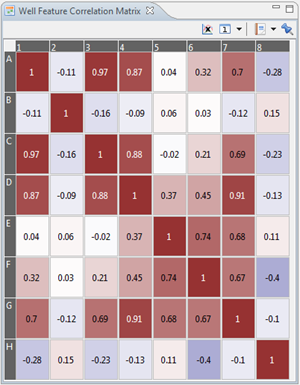

The Feature Correlation matrix shows exactly what the title suggests. You can select different features which will be added in the x and y axes of the matrix and will show correlating data according to the crossing features.
This matrix is used to show certain correlations between the features of wells.

See subwell-feature correlation matrix for more information on correlaction matrices.
You can add or remove features for the correlation matrix using the X axis button in the toolbar.